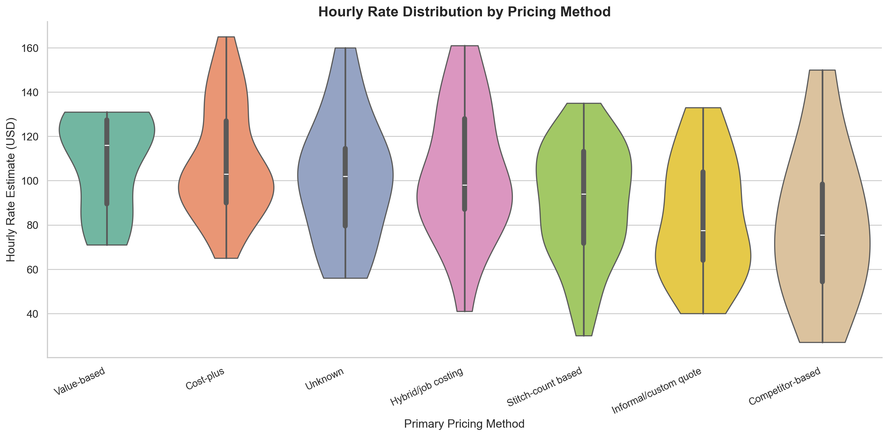

Pricing & survey analysis · Simulated survey analysis
Find the pricing habits worth investigating
A simulated embroidery business survey examines pricing systems, cost tracking and quoted hourly rates. The analysis turns those patterns into questions a shop owner can test.
- Contribution
- Mehrab Mashrafi
- Scope
- Cleaning, segmentation, statistical tests and text analysis
- Project context
- Exploratory portfolio study

Estimated rate difference in the sample
About $67/hour
Association in simulated data, not extra profit delivered to shops or evidence of causation.
Separate a pricing habit from a financial result
Mehrab paired diagnostic responses with a financial benchmark dataset, cleaned the inputs and grouped the overlapping cohort by pricing maturity.
Quoted hourly rate, revenue and profit are different measures. A difference in one should not become a claimed improvement in another.
The documented preparation produced 680 clean diagnostic rows, 200 financial benchmark rows and an overlapping cohort of 142. Cohort matching and group comparison are the transferable analytical tasks; the simulated dollar gap is not a market estimate.
Use patterns to choose the next question
Group comparisons, statistical tests and open text analysis make cost tracking, confidence, overhead and regional benchmarks useful topics to investigate with a business.
A live pricing change would still need suitable data, an agreed measure and a way to check what changed afterward.
For example, a review can ask whether a quote includes setup time and overhead, and whether the same labour assumptions are applied to rush orders. These are questions to test with real records, not prescriptions derived from the simulated rate gap.
How the work connects
- 01
Simulated survey records
- 02
Cleaning & cohort matching
- 03
Maturity groups
- 04
Statistical comparisons
- 05
Review questions
What this work establishes
The simulated sample shows an estimated hourly rate gap of about $67 between stronger and weaker pricing system groups. It does not measure profit gained through an intervention.
The survey style data is simulated. Its exploratory gap is not a market wide benchmark, causal effect or customer margin gain.
Inspect the work or discuss the approach
What would make your team’s work easier?
Tell me who uses the workflow, which records it depends on and where the handoff slows down.
Discuss your use case Email meProject notes by Mehrab Mashrafi. Updated .